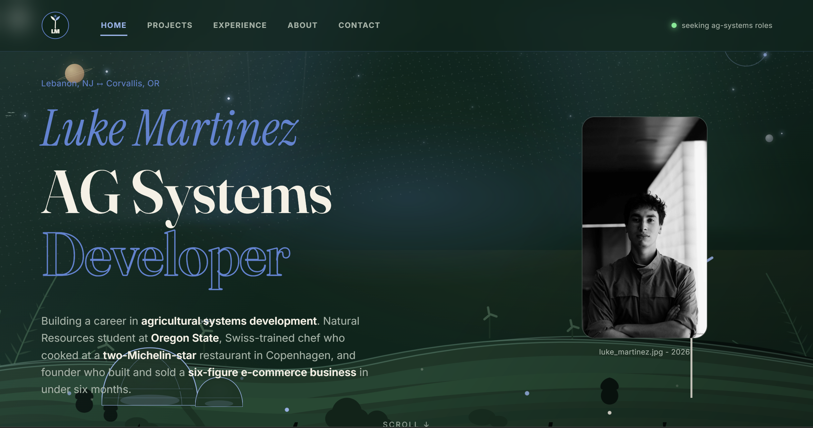

Luke Martinez Website

A custom portfolio website designed and built for Luke Martinez, an AG Systems Developer and Natural Resources student at Oregon State University. Luke is also a Swiss-trained chef who cooked at a two-Michelin-star restaurant in Copenhagen and a founder who built and sold a six-figure e-commerce business.
The site features a dark, nature-inspired design with an animated star field, custom typography, and a layout tailored to Luke's unique background spanning agriculture, culinary arts, and entrepreneurship.
The stack is pure HTML, CSS, and JavaScript with Firebase Hosting, keeping things fast, lightweight, and easy to maintain. The design was adapted from my own portfolio template and customized to match Luke's brand and story.